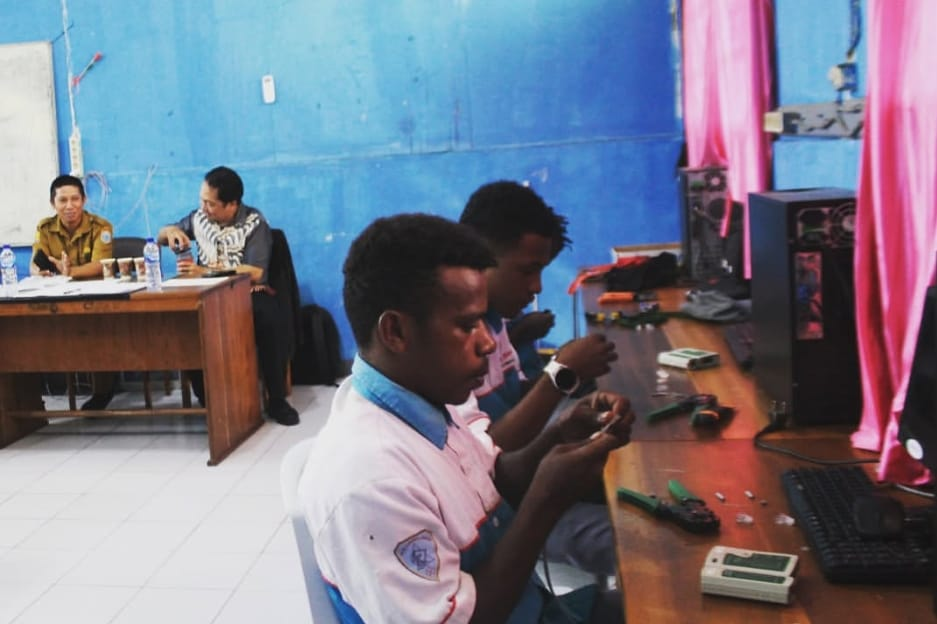
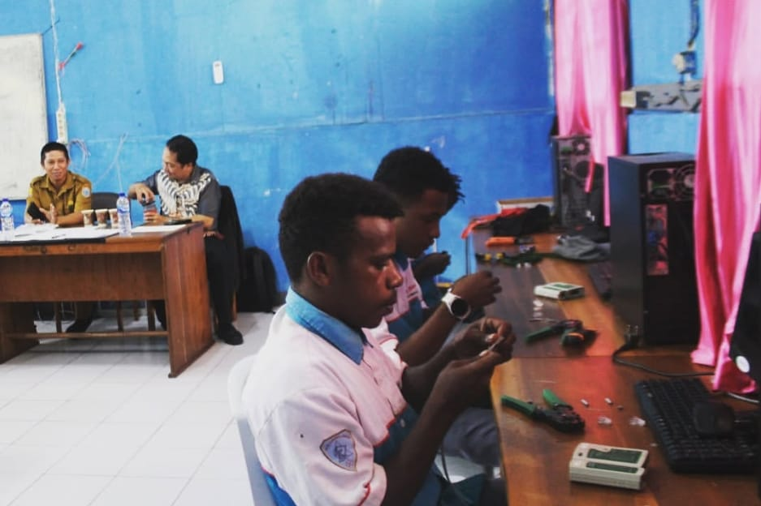
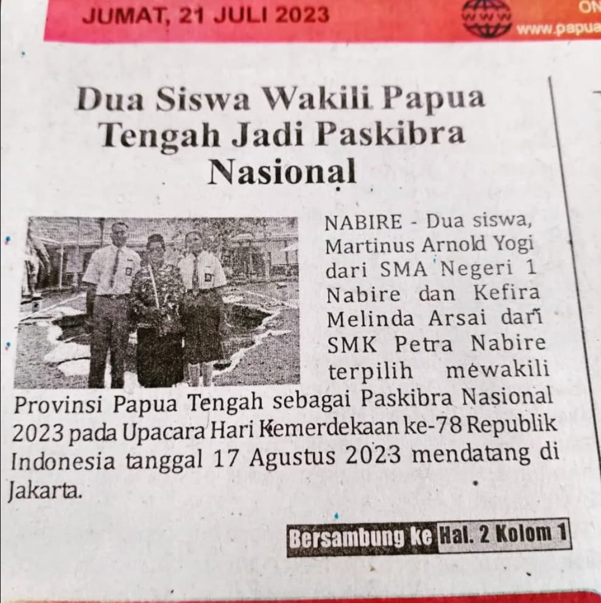
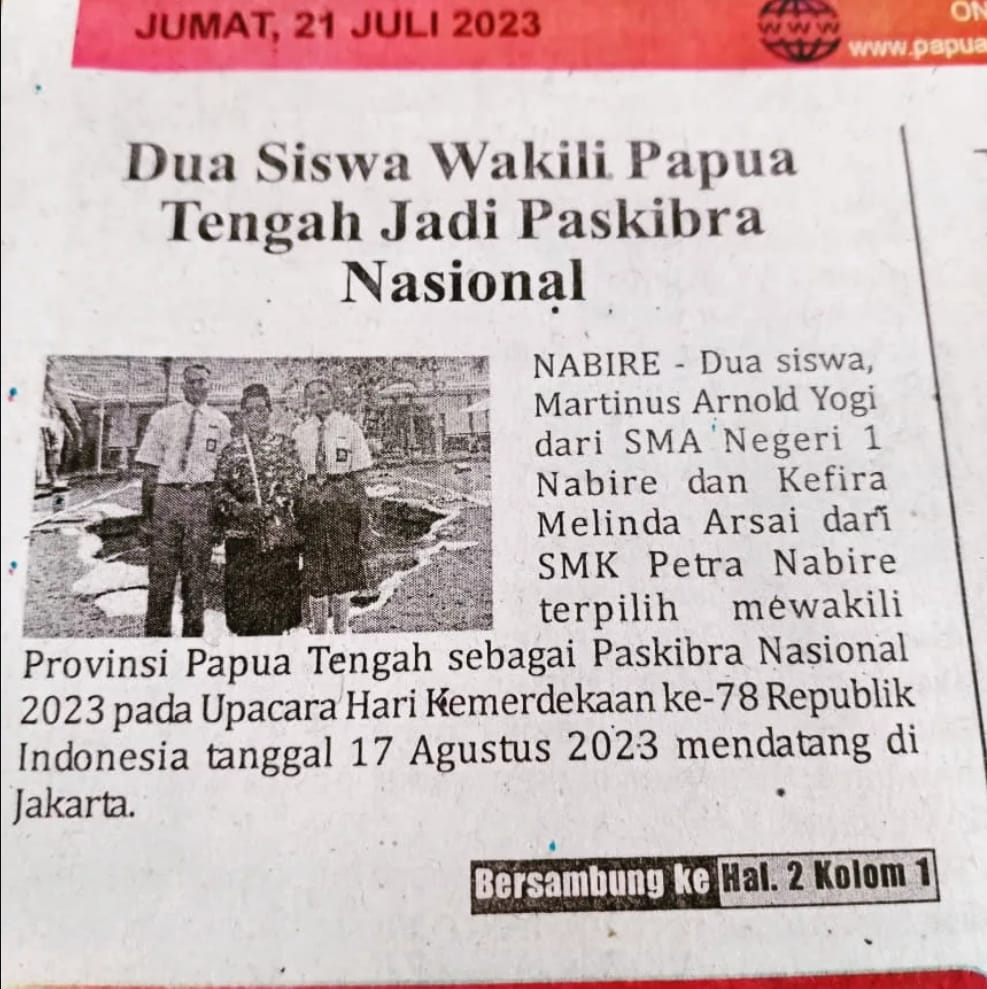

|
SMK Petra, Jumat (23/05/2025) — Kegiatan ini berlangsung di halaman sekolah dan didukung oleh Polres Nabire.
Para pelajar mengikuti kegiatan tersebut dengan sangat antusias, karena materi yang disampaikan relevan,
menarik, dan interaktif. Kasat Lantas Polres Nabire, AKP Didit Permadi, membuka sesi edukasi dengan memberikan penjelasan mengenai pentingnya keselamatan dalam berkendara, khususnya bagi pengendara pemula. Edukasi ini bertujuan untuk meningkatkan kesadaran siswa akan aturan lalu lintas serta pentingnya berkendara dengan aman dan tertib. |


 



 
